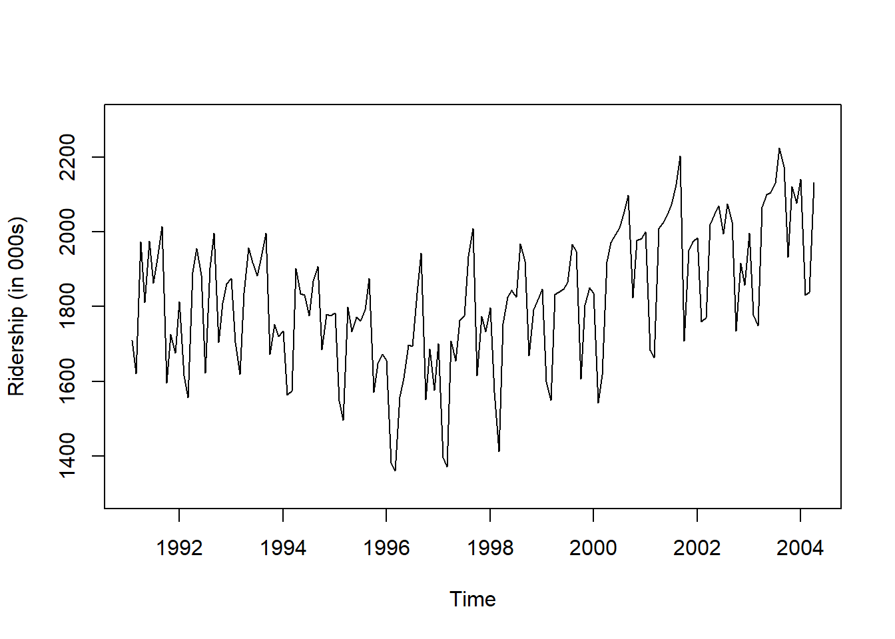

pacman::p_load("dplyr", "forecast", "parallel")
# In Mac
# guess_encoding("Amtrak.csv")
# Amtrak.data <- read.csv("Amtrak.csv", fileEncoding="EUC-KR")
Amtrak.data <- read.csv(".../Amtrak.csv")
Amtrak.data %>%
as_tibble11 TBATS
11.1 Introduction
- TBATS 모형
- T : Trigonometric seasonality
- 퓨리에 항(Fourier Series) 기반
- B : Box-Cox transformation
- A : ARIMA errors
- T : Trend (possibly damped)
- S : Seasonal components
- T : Trigonometric seasonality
- TBATS 모형은
광범위한 계절 패턴 변동과 관련된 문제를 극복하고상관성이 있는 오차를 처리하기 위해지수 평활(Exponential Smoothing)을 사용한 수정된 상태공간 모형으로 De Livera et al. (2011)이 제안하였다. - 게다가 비선형성(Nonlinearity)에 관련된 문제를 해결하기 위해 Box-Cox 변환도 고려되었다.
- TBATS 모형은
복잡한 계절성을 가진 시계열 데이터를 분석하는 데 유용하다.- 복잡한 계절성의 예 : 다중 계절성(Multiple Seasonal Pattern), Non-integer Seasonality, Non-nested Seasonality and Large-period Seasonality 등
- TBATS 모형은 계절성이 시간에 따라 느리게 변할 수 있다는 점에서 Dynamic Harmonic Regression과 다르다.
- 즉, 시간이 지남에 따라 계절성이 천천히 변화할 수 있다는 장점이 있다.
- 하지만, 주기가 긴 시계열을 추정하는데 느릴 수 있다는 단점이 있다.
11.2 Application
- Ridership on Amtrak Trains(미국 철도 회사 “Amtrak”에서 수집한 1991년 1월~2004년 3월까지 매달 환승 고객 수) 예제를 이용하여 TBATS 모형이 실제 데이터에 어떻게 적용되는지 설명한다.
11.2.1 데이터 불러오기
# A tibble: 159 × 2
Month Ridership
<chr> <dbl>
1 01/01/1991 1709.
2 01/02/1991 1621.
3 01/03/1991 1973.
4 01/04/1991 1812.
5 01/05/1991 1975.
6 01/06/1991 1862.
7 01/07/1991 1940.
8 01/08/1991 2013.
9 01/09/1991 1596.
10 01/10/1991 1725.
# ℹ 149 more rows11.2.2 데이터 전처리
# Convert to ts for Target
ridership.ts <- ts(Amtrak.data$Ridership,
start = c(1991, 2), # 시계열의 시작 연도 / c(1991, 2) : 1991년 2월 -> 첫 번째 시계열은 제거했기 때문
frequency = 12) # 주기 / 월별 시계열로 1년에 12번 관측
# 시계열 그림
plot(ridership.ts,
xlab = "Time", ylab = "Ridership (in 000s)",
ylim = c(1300, 2300))
Caution! CSV 파일로 불러온 데이터를 살펴보면 승객 수를 포함하는 변수 Ridership가 수치형임을 알 수 있다. 시계열 데이터 분석을 위해 함수 ts()를 이용하여 해당 변수를 시계열 객체로 변환해야 한다.
Result! 시계열 그림을 살펴보면 Amtrak 데이터는 U자 형태의 추세를 발견할 수 있으며, 여름(7월과 8월) 동안에 승객이 급증하는 뚜렷한 계절변동도 볼 수 있다.
11.2.3 데이터 분할
Caution! 시계열 데이터 분석 시 모형의 과적합을 피하고 미래 데이터에 대한 예측력을 계산하기 위해 Training Dataset과 Test Dataset으로 분할해야 한다. 시계열 데이터의 경우, 시간에 의존하기 때문에 시간 순서를 고려하여 데이터를 분할해야 한다. 즉, 앞 시점의 데이터를 Training Dataset로 사용하여 모형을 구축하고, 뒷 시점의 데이터를 Test Dataset로 사용하여 구축된 모형의 성능을 평가한다. 여기서는 데이터 분할을 위해 함수 window()를 사용한다.
# Partition for Target
train.ts <- window(ridership.ts,
start = c(1991, 2), # 분할하고자 하는 시계열의 시작 연도 / c(1991, 2) : 1991년 2월 -> 첫 번째 시계열은 제거했기 때문
end = c(2001, 3)) # 분할하고자 하는 시계열의 마지막 연도 / c(2001, 3) : 2001년 3월
test.ts <- window(ridership.ts,
start = c(2001, 4)) # 분할하고자 하는 시계열의 시작 연도 / c(2001, 4) : 2001년 4월
nTrain <- length(train.ts) # Training Dataset의 데이터 포인트 개수
nTest <- length(test.ts) # Test Dataset의 데이터 포인트 개수
train.ts %>%
as_tibble# A tibble: 122 × 1
x
<dbl>
1 1709.
2 1621.
3 1973.
4 1812.
5 1975.
6 1862.
7 1940.
8 2013.
9 1596.
10 1725.
# ℹ 112 more rowstest.ts %>%
as_tibble# A tibble: 37 × 1
x
<dbl>
1 2008.
2 2024.
3 2047.
4 2073.
5 2127.
6 2203.
7 1708.
8 1951.
9 1974.
10 1985.
# ℹ 27 more rowsnTrain[1] 122nTest[1] 3711.2.4 모형 적합
forecastpackage에 있는tbats()를 이용하여 모형을 적합시킬 수 있다. 자세한 옵션은 여기를 참조한다.
tbats(
y,
use.box.cox = NULL,
use.trend = NULL,
use.damped.trend = NULL,
seasonal.periods = NULL,
use.arma.errors = TRUE,
use.parallel = length(y) > 1000,
num.cores = 2,
bc.lower = 0,
bc.upper = 1,
biasadj = FALSE,
model = NULL,
...
)- y : 시계열 데이터
- use.box.cox : Box-Cox 변환 사용 여부로 NULL이면 둘 다 시도되고 AIC로 최적 적합을 선택
- use.trend : 추세 포함 여부로 NULL이면 둘 다 시도되고 AIC로 최적 적합을 선택
- use.damped.trend : 추세에 damping parameter 포함 여부로 NULL이면 둘 다 시도되고 AIC로 최적 적합을 선택
- seasonal.periods : y가 수치형일 경우, 명시되는 계절 기간
- use.arma.errors : ARIMA 오차항 사용 여부
- use.parallel : 병렬 처리 사용 여부
- num.cores : 코어 수
- bc.lower : Box-Cox 변환에 대한 최소값
- bc.upper : Box-Cox 변환에 대한 최대값
- biasadj : Box-Cox 변환에 수정된 역변환 평균을 사용 여부로 TRUE인 경우 점 예측값과 적합치는 평균 예측값,그렇지 않으면 예측 밀도의 중위수로 간주
cl <- parallel::makeCluster(detectCores(), setup_timeout = 0.5)
TBATS.fit <- train.ts %>%
tbats(use.box.cox = FALSE,
use.trend = TRUE,
use.damped.trend = TRUE,
use.parallel = TRUE,
num.cores = cl)
summary(TBATS.fit) Length Class Mode
lambda 0 -none- NULL
alpha 1 -none- numeric
beta 1 -none- numeric
damping.parameter 1 -none- numeric
gamma.one.values 1 -none- numeric
gamma.two.values 1 -none- numeric
ar.coefficients 0 -none- NULL
ma.coefficients 0 -none- NULL
likelihood 1 -none- numeric
optim.return.code 1 -none- numeric
variance 1 -none- numeric
AIC 1 -none- numeric
parameters 2 -none- list
seed.states 12 -none- numeric
fitted.values 122 ts numeric
errors 122 ts numeric
x 1464 -none- numeric
seasonal.periods 1 -none- numeric
k.vector 1 -none- numeric
y 122 ts numeric
p 1 -none- numeric
q 1 -none- numeric
call 7 -none- call
series 1 -none- character
method 1 -none- character11.2.5 예측
TBATS.forecast <- forecast(TBATS.fit,
h = nTest) # Test Dataset의 데이터 포인트 개수만큼 예측값 계산
# 예측값
TBATS.forecast$mean Jan Feb Mar Apr May Jun Jul Aug Sep Oct Nov Dec
2001 1983.808 1962.787 2013.544 1946.094 2075.572 2104.164 1800.691 1902.532 1911.355
2002 1926.045 1708.082 1645.793 1973.662 1954.670 2007.050 1940.899 2071.416 2100.839 1798.031 1900.404 1909.653
2003 1924.683 1706.993 1644.922 1972.965 1954.112 2006.604 1940.542 2071.130 2100.611 1797.848 1900.258 1909.536
2004 1924.589 1706.918 1644.862 1972.917 plot(TBATS.forecast)# 예측 정확도
accuracy(c(TBATS.forecast$mean), test.ts) ME RMSE MAE MPE MAPE ACF1 Theil's U
Test set 79.64638 109.6399 94.91454 3.903663 4.744498 0.5536357 0.6483466